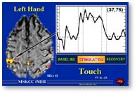
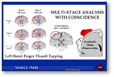
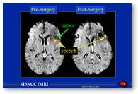

|
The Future Role
of functional MRI
in Medical Applications
INTRODUCTION
The recent discovery that magnetic
resonance imaging can be used to map changes in brain hemodynamics that
correspond to mental operations extends traditional anatomical imaging to
include maps of human brain function. The ability to observe both the
structures and also which structures participate in specific functions is
due to a new technique called functional magnetic resonance imaging, fMRI,
and provides high resolution, noninvasive reports of neural activity
detected by a blood oxygen level dependent signal (Ogawa, et al, 1990 a
and b, 1992, 1993; Belliveau, et al, 1990, 1991). This new ability to
directly observe brain function opens an array of new opportunities to
advance our understanding of brain organization, as well as a potential
new standard for assessing neurological status and neurosurgical risk. The
following briefly introduces the fundamental principles of fMRI, current
applications at Columbia, and some potential future directions.
WHAT IS fMRI?
Functional MRI is based on the increase in blood flow to the local
vasculature that accompanies neural activity in the brain. This results in
a corresponding local reduction in deoxyhemoglobin because the increase in
blood flow occurs without an increase of similar magnitude in oxygen
extraction (Roy and Sherrington, 1890; Plum, Posner & Troy, 1968;
Posner, Plum & Poznak, 1969; Fox and Raichle, 1985). Since
deoxyhemoglobin is paramagnetic, it alters the T2* weighted magnetic
resonance image signal (Ogawa, et al, 1990a and b, 1992, 1993; Belliveau,
et al, 1990, 1991; Turner, et al, 1991; Tank, et al, 1992). Thus,
deoxyhemoglobin is sometimes referred to as an endogenous contrast
enhancing agent, and serves as the source of the signal for fMRI. Using an
appropriate imaging sequence, human cortical functions can be observed
without the use of exogenous contrast enhancing agents on a clinical
strength (1.5 T) scanner (Bandettini, et al, 1992, 1993; Kwong, et al,
1992; and Turner, et al, 1993; Schneider, et al, 1993). Functional
activity of the brain determined from the magnetic resonance signal has
confirmed known anatomically distinct processing areas in the visual
cortex (Belliveau, et al, 1991; Ogawa, et al, 1992; Blamire, et al, 1992;
Schneider, et al, 1993; Hirsch, et al, 1995), the motor cortex (Kim, et
al, 1993a; Kim, et al, 1993b), and Broca's area of speech and
language-related activities (Hinke, et al, 1993, Kim, et al, 1995).
Further, a rapidly emerging body of literature documents corresponding
findings between fMRI and conventional electrophysiological techniques to
localize specific functions of the human brain (Atlas, et al, 1996; Puce,
et al, 1995; Burgess, 1995; Detre, et al, 1995; George, et al, 1995; Ives,
et al, 1993). Consequently, the number of medical and research centers
with fMRI capabilities and investigational programs continues to escalate.
The main advantages to fMRI as a technique to image brain activity
related to a specific task or sensory process include 1) the signal does
not require injections of radioactive isotopes, 2) the total scan time
required can be very short, i.e., on the order of 1.5 to 2.0 min per run
(depending on the paradigm), and 3) the in-plane resolution of the
functional image is generally about 1.5 x 1.5 mm although resolutions less
than 1 mm are possible. To put these advantages in perspective, functional
images obtained by the earlier method of positron emission tomography,
PET, require injections of radioactive isotopes, multiple acquisitions,
and, therefore, extended imaging times. Further, the expected resolution
of PET images is much larger than the usual fMRI pixel size. Additionally,
PET usually requires that multiple individual brain images are combined in
order to obtain a reliable signal. Consequently, information on a single
patient is compromised and limited to a finite number of imaging sessions.
Although these limitations may serve many neuroscience applications, they
are not optimally suitable to assist in a neurosurgical or treatment plan
for a specific individual.
METHODS AND
PROCEDURES
The particular imaging methods
and procedures vary from center-to-center because each group has
independently developed the methods and analysis procedures required to
acquire and process functional data. There is not yet a commercial package
of software and standardized tasks for clinical use. A brief summary of
our clinical techniques is described below, and serves to illustrate the
general conditions.
Image Acquisition: Images are acquired using a T2* weighted
gradient echo sequence: TE = 60 ms, TR = 3 secs, flip angle = 90 deg on a
1.5 T Magnetic Resonance Imaging System (General Electric) located in the
Department of Radiology at Columbia. This system is equipped with echo
planar options which provides very rapid image acquisitions. Slice
thickness is usually set at 5 mm but can be as thin as 3 mm. Simultaneous
images are acquired on as many as 16 contiguous slices (21 slices with
longer acquisition times) oriented along any suitable plane. Each imaging
series requires approximately 30 complete head volume acquisitions.
Image Processing: An image processing facility has been
developed as a stand-alone system outside of the scanner system. This
facility provides the computational capability required to reconstruct the
large numbers of images and provides the statistical analyses that
identify the anatomical regions that are active during specific tasks.
Task Procedure: Patients and subjectsare positioned in the
scanner as for a conventional scan, and plane lines are set based on
conventional imaging methods. During a typical functional imaging series,
30 images are acquired in a 90 sec run where the initial and last 10
images are baseline conditions and the middle 10 images (30 secs) are
acquired during a task. For example, in the case of a typical task
designed to identify eloquent brain tissue involved in hand and finger
movement, the patient taps fingers and thumb during the activity epoch.
The beginning and end of this activity period is cued by a visual or
auditory signal and occurs at images 10 and 20, respectively. Language,
sensory, visual, auditory and other targeted functions are imaged in a
similar manner. A task-induced signal change is illustrated in Fig. 1 for
a sensory task involving tactile stimulation (touching) the left hand. The
abscissa represents a 30 image acquisition run during a 90 sec period. The
initial 10 pre-stimulation (baseline) images are followed by 10 activation
images (left hand stimulation) and 10 post-stimulation images. Each 90 sec
imaging series (illustrated by the intensity levels for one voxel) is
actually repeated twice although only one series is illustrated. In this
example the left hand stimulation results in right hemisphere activity and
presumably represents the post central sulcus sensory strip.
Figure 1. A 5 mm axial slice is
shown with the voxels indicated (small boxes) that show significant signal
changes with left hand tactile stimulation. The intensity trace indicates
the changes for one voxel during one image acquisition sequence of 30
images where images 1-10 were acquired during baseline conditions, images
11-20 were acquired during the task, and images 21-30 were acquired during
baseline-recovery. Statistical analysis of each voxel in the entire brain
over the 60 total acquisitions identifies the voxels with activity-related
signal changes.
Data analysis: Statistical analyses have been developed to
identify areas of the brain activated by specific tasks and are based on a
multistage comparison of stimulation and resting intensity levels as well
as multiple replications (Hirsch, et al, 1994 a and b; Hirsch, et al,
1995). These successive stages of analysis are illustrated in Fig. 2 for
left hand finger-thumb tapping. The schematic "homonculus" illustrates
that the expected and observed locations of brain activity during this
task appear coincident.
The fundamental unit of analysis is the
single voxel as shown on Fig. 1 identified by its coordinates x, y, and z
where x and y indicate the in-plane location and z indicates the slice.
Significant voxels (as shown in Fig. 1) indicate regions of the brain
activated by a specific task. Empirical probability distributions based on
phantom images (CuSO4 solution filled sphere) confirm that the
probability of a significant result by chance is less than 0.0001. Voxels
that do not show a significant intensity change during the activity period
are not colored. Rather, they are represented by the mean level which
yields the anatomic detail for each slice of brain.
Preliminary investigations of human brain mapping with these
procedures have yielded insights into the functional organization of
various sensory, motor, and language systems (Hirsch, et al, 1994 a-c,
1995 a-c Kim, et al, 1995; Lee, et al, 1995) and our goal is to transfer
and apply these techniques to benefit patient care. Some possible
applications are discussed below.
FUTURE ROLE IN NEUROSURGICAL
PLANNING
Since neurosurgery relies on a
precise delineation of the structural and functional aspects of brain, the
role for fMRI in neurosurgical planning is potentially very significant.
The need for individualized maps of brain function is enhanced when the
presence of a tumor alters the expected location of a function, or when
the location of the tumor is in an area with an uncertain function such as
association cortices or language-related processes. An emerging group of
investigators have reported fMRI results that are consistent with
electrophysiology, PET, cortical stimulation, and magneto-encephalography
and serve to document that fMRI does provide a source of precise
functional and structural information for Neurosurgery (Burgess, 1995;
George, et al, 1995; Simpson, et al, 1995, Puce, (1995a,b); Fried, et al,
1995; Peyron, 1995; Clifford, et al, 1995; Haglund, 1995; Detre, et al,
1995; and Ives, et al, 1993). Further, the potential role of fMRI in
directing decisions about surgical and diagnostic procedures has also been
demonstrated (Atlas, S.W., et al, 1996).
The following example illustrates the potential advantage of
functional plus anatomical information for surgical treatment of brain
tumors that are located near active areas of brain.
A single axial slice is shown in Fig. 3 for
a 32 year old male patient before and after resection of a left frontal
lobe GBM. Prior to surgery various language and speech tasks were employed
to chart functional language areas in the vicinity of the tumor. The left
slice shows an area active during extemporaneous speech just posterior and
adjacent to the tumor. The right slice shows the same area of brain
following the resection. The speech area remains just posterior to the
resected tumor bed and the patient experienced no speech deficit following
surgery. This example also illustrates a potential challenge for
functional imaging. The choices of tasks must be selected based on prior
knowledge of functions near the targeted areas. Therefore, a null finding
may only mean that the optimal task was not applied.
Currently, a cohort of neurosurgical patients are participants
in a protocol at Columbia to evaluate the potential applications of fMRI
for neurosurgical planning. These patients receive a standard battery of
tasks targeted to localize language, sensory, motor and visual areas both
as candidates for surgery and as post-surgical patients. Functional
imaging results are compared with all conventional mapping studies
performed on each patient including the WADA test, intraoperative cortical
stimulation, electrophysiological assessments, and neurologic assessments
of surgical outcome. The objective of this on-going investigation is to
determine the potential role of functional mapping for neurosurgical
procedures.
FUTURE ROLE IN PAIN
MANAGEMENT
The experience of chronic and
persistent pain is a debilitating condition for which the role of cortical
processing is not well understood. We have focused on the identification
of cortical areas that are modified by the reduction of pain following
pain therapy. This novel approach to investigate the cortical
representation associated with relief of pain has originated from our
pilot studies where patients with chronic sympathetically maintained pain
affecting one extremity (post herpetic neuralgia) were studied by
comparing brain responses to light touch applied to the "now-affected"
limb and to the "painful" limb before and after treatment (Hewitt, et al,
1995). These studies indicate that the cortical representation of
sympathetically maintained pain involves specific and identifiable
cortical activity, as well as does the relief of that pain achieved by a
peripheral nerve block procedure. Continuing investigations will extend
these findings to other pain treatments to determine the extent to which
this finding is generalizable to other pain relief mechanisms. These
preliminary studies suggest a wide range of other approaches using fMRI to
investigate cortical representations of specific pain types, and
therefore, new specific therapy options.
FUTURE ROLE IN UNDERSTANDING THE
PHYSIOLOGICAL BASIS FOR NEUROLOGICAL
DISORDERS
The following example
illustrates the potential of fMRI to yield new insights into physiological
bases for disfunction. A 16 year old right handed female with a congenital
malformation in the right posterior frontal lobe and a seizure disorder
participated in a functional imaging study to identify functional
sensorimotor areas. One of the patient's typical sensory seizures occured
during one of the runs. This enabled us to localize fMRI signals
associated with the onset of a spontaneous seizure, its progression, and
the relationship to normally activated motor cortex. There was minimal
movement artifact which was further reduced by alignment of the images
prior to a voxel-by-voxel statistical analysis. The fMRI signals
associated with the seizure were first observed in an area adjacent to the
normal motor activity. MR signal amplitudes exceeded the normal functional
activity by as much as a factor of 5. A sequential time analysis (6 sec
intervals) revealed both local spreading of the onset focus and the
emergence of subsequent foci first in the ipsilateral prefrontal areas,
and the mesial surface areas. These were followed by activity in the
homologous regions of the opposite hemisphere suggesting that the
generalization followed a specific pattern of functional connectivity.
Thus, eloquent motor activity and seizure activity were co-localized using
fMRI, and the onset, progression pattern, time course, and relative MR
amplitudes of the seizure event were observed (Hirsch, et al,1996). This
case illustrates that fMRI may contribute to improved precision of seizure
localization and understanding of seizure progression, and suggests a
future direction for investigation.
Other neurological conditions currently under investigation
using fMRI at Columbia include neglect syndromes, phantom pain, cerebellar
dysfunction, and neural reorganization. Preliminary studies confirm that
the pathways and processes involved in these neurological disorders and
conditions can be observed for investigation by fMRI.
FUTURE ROLE IN UNDERSTANDING THE
PHYSIOLOGICAL BASIS FOR COGNITIVE AND PERCEPTUAL
EVENTS
Due to the ability to image the
entire 3-dimensional volume of brain, fMRI is capable of isolating many
simultaneous and coordinated brain events. This "multi-level" view of
brain activity can include "executive" functions and high level cognitive
tasks simultaneously with the primary and secondary input such as vision
and audition as well as cerebellar contributions. We are currently
applying fMRI methods to identify brain structures uniquely involved with
visual perceptions, language generation, comprehension of sequential
information as in a movie, the execution of visually guided responses, and
complex problem solving. These aspects of brain function have not
previously been scrutinized with such precision, and represent some of the
remaining frontiers in Neuroscience.
SUMMARY AND FUTURE
DIRECTIONS
The goal of this presentation
was to introduce the basics of fMRI and to suggest potential future
applications in neuro-oncology. Based on our initial investigations, these
future directions include neurosurgical planning and improved assessment
of risk for individual patients, improved assessment and strategies for
the treatment of chronic pain, improved seizure localization, and improved
understanding of the physiology of neurological disorders. We look ahead
to these and other emerging applications as the benefits of this
technology become incorporated into current and future patient care.
Click here for more fMRI Documenation
|
{kind=link}
{kind=link}
{kind=link}